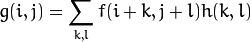
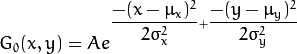
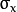
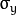
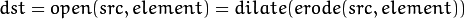
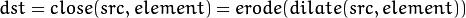
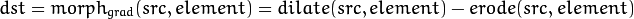
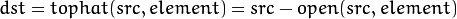
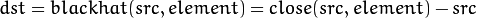

模糊處理
模糊 亦稱為 平滑 其最常用於 降噪 平滑處理 需要一個 濾波器 最常用的 是線性濾波器 輸出像素值 (i.e.g(i,j)) 是輸入像素值 (i.e.f(i+k,j+l))的加權和  h(k,l) 稱為 核
歸一化塊 濾波器
輸出像素 為 核內像素值的 均值 void blur(InputArray src, //輸入圖像 OutputArray dst, //輸出圖像 Size ksize, //核 大小 Point anchor=Point(-1,-1), //錨點(平滑點) 如果為負值 取 核中心 為錨點 int borderType=BORDER_DEFAULT )
高斯 濾波器
將輸入數組的每一個 像素點 餘 高斯內核 卷面積和 作為輸出像素 二維高斯函數表達式  void GaussianBlur(InputArray src, //輸入圖像 OutputArray dst, //輸出圖像 Size ksize, //內核大小 Size(w,h) w h 必須為正奇數 否則使用   參數計算內核大小 double sigmaX, double sigmaY=0, int borderType=BORDER_DEFAULT ) x方向標準方差 y方向標準方差
中值 濾波器
將圖像每個點 的每個相鄰像素 用 鄰域(以當前像素為中心的 正方形區域) 像素的中值 代替 void medianBlur(InputArray src, OutputArray dst, int ksize //內核大小 必須為正 奇數 )
雙邊 濾波器
類似於 高斯 濾波器 不過其在一定程度上 保證 邊緣不被 磨掉 void bilateralFilter(InputArray src, OutputArray dst, int d, //像素鄰域直徑 double sigmaColor, //顏色空間標準方差 double sigmaSpace, //坐標... int borderType=BORDER_DEFAULT )
example
#include <opencv2\imgproc\imgproc.hpp>
#include <opencv2\core\core.hpp>
#include <opencv2\highgui\highgui.hpp>
#define DARK_DELAY 2000
#define DARK_DELAY_BLUR 100
#define MAX_KERNEL_LENGTH 31
int display_dst(const std::string& window_name,cv::Mat& dst, int delay )
{
cv::imshow( window_name, dst );
int c = cv::waitKey ( delay );
if( c >= 0 ) { return -1; }
return 0;
}
int _tmain(int argc, _TCHAR* argv[])
{
//顯示原圖像
cv::Mat src = cv::imread("123.jpg");
if(display_dst("Original Image",src,DARK_DELAY))
{
return 0;
}
cv::Mat dst = src.clone();
//Homogeneous Blur
for ( int i = 1; i < MAX_KERNEL_LENGTH; i = i + 2 )
{
cv::blur(src,dst,cv::Size(i,i),cv::Point(-1,-1));
if(display_dst("Homogeneous Blur",dst,DARK_DELAY_BLUR))
{
return 0;
}
}
//Gaussian blur
for ( int i = 1; i < MAX_KERNEL_LENGTH; i = i + 2 )
{
cv::GaussianBlur(src,dst,cv::Size(i,i),0,0);
if(display_dst("Gaussian Blur",dst,DARK_DELAY_BLUR))
{
return 0;
}
}
//Median blur
for ( int i = 1; i < MAX_KERNEL_LENGTH; i = i + 2 )
{
cv::medianBlur(src,dst,i);
if(display_dst("Median Blur",dst,DARK_DELAY_BLUR))
{
return 0;
}
}
//Bilateral Filter
for ( int i = 1; i < MAX_KERNEL_LENGTH; i = i + 2 )
{
cv::bilateralFilter(src,dst,i,i*2,i/2);
if(display_dst("Bilateral Blur",dst,DARK_DELAY_BLUR))
{
return 0;
}
}
cv::waitKey();
return 0;
}
腐蚀与膨胀
形態學 最基本的 操作 就是 腐蚀与膨胀 常用於 消除噪音 分隔獨立 圖像元素 連接相鄰 元素 尋找圖像中的 極大值區域 極小值 區域 膨脹可以 使圖像中的 亮區擴大 而腐蝕相反 opencv 使用 void erode(InputArray src, //輸入圖像 OutputArray dst, //輸出圖像 InputArray kernel, //核 Point anchor=Point(-1,-1), int iterations=1, int borderType=BORDER_CONSTANT, const Scalar& borderValue=morphologyDefaultBorderValue() ) 完成腐蝕 void dilate(InputArray src, OutputArray dst, InputArray kernel, Point anchor=Point(-1,-1), int iterations=1, int borderType=BORDER_CONSTANT, const Scalar& borderValue=morphologyDefaultBorderValue() ) 完成膨脹 創建核 Mat getStructuringElement(int shape, //指定核形狀 //MORPH_RECT(矩形) MORPH_CROSS(交叉形) MORPH_ELLIPSE(橢圓形) Size ksize, //核大小 Point anchor=Point(-1,-1) //核錨點 )
example
#include<opencv2\imgproc\imgproc.hpp>
#include<opencv2\core\core.hpp>
#include<opencv2\highgui\highgui.hpp>
using namespace cv;
/// 全局变量
Mat src, erosion_dst, dilation_dst;
int erosion_elem = 0;
int erosion_size = 0;
int dilation_elem = 0;
int dilation_size = 0;
int const max_elem = 2;
int const max_kernel_size = 21;
/** Function Headers */
void Erosion( int, void* );
void Dilation( int, void* );
/** @function main */
int main( int argc, char** argv )
{
/// Load 图像
src = imread( "123.jpg" );
if( !src.data )
{ return -1; }
/// 创建显示窗口
namedWindow( "Erosion Demo", CV_WINDOW_AUTOSIZE );
namedWindow( "Dilation Demo", CV_WINDOW_AUTOSIZE );
cvMoveWindow( "Dilation Demo", src.cols, 0 );
/// 创建腐蚀 Trackbar
createTrackbar( "Element:\n 0: Rect \n 1: Cross \n 2: Ellipse", "Erosion Demo",
&erosion_elem, max_elem,
Erosion );
createTrackbar( "Kernel size:\n 2n +1", "Erosion Demo",
&erosion_size, max_kernel_size,
Erosion );
/// 创建膨胀 Trackbar
createTrackbar( "Element:\n 0: Rect \n 1: Cross \n 2: Ellipse", "Dilation Demo",
&dilation_elem, max_elem,
Dilation );
createTrackbar( "Kernel size:\n 2n +1", "Dilation Demo",
&dilation_size, max_kernel_size,
Dilation );
/// Default start
Erosion( 0, 0 );
Dilation( 0, 0 );
waitKey(0);
return 0;
}
/** @function Erosion */
void Erosion( int, void* )
{
int erosion_type;
if( erosion_elem == 0 ){ erosion_type = MORPH_RECT; }
else if( erosion_elem == 1 ){ erosion_type = MORPH_CROSS; }
else if( erosion_elem == 2) { erosion_type = MORPH_ELLIPSE; }
Mat element = getStructuringElement( erosion_type,
Size( 2*erosion_size + 1, 2*erosion_size+1 ),
Point( erosion_size, erosion_size ) );
/// 腐蚀操作
erode( src, erosion_dst, element );
imshow( "Erosion Demo", erosion_dst );
}
/** @function Dilation */
void Dilation( int, void* )
{
int dilation_type;
if( dilation_elem == 0 ){ dilation_type = MORPH_RECT; }
else if( dilation_elem == 1 ){ dilation_type = MORPH_CROSS; }
else if( dilation_elem == 2) { dilation_type = MORPH_ELLIPSE; }
Mat element = getStructuringElement( dilation_type,
Size( 2*dilation_size + 1, 2*dilation_size+1 ),
Point( dilation_size, dilation_size ) );
///膨胀操作
dilate( src, dilation_dst, element );
imshow( "Dilation Demo", dilation_dst );
}
形態學變化
利用 腐蝕 膨脹 可以 組合出 多種 形態學變化 opencv 將其 封裝在 morphologyEx 中 void morphologyEx(InputArray src, //輸入圖像 OutputArray dst, //輸出圖像 int op, //形態學 變化方式 InputArray kernel, //核 參見 腐蝕 膨脹 Point anchor=Point(-1,-1), int iterations=1, int borderType=BORDER_CONSTANT, const Scalar& borderValue=morphologyDefaultBorderValue() ) op 取值 MORPH_OPEN 開運算 開運算 通過 先 腐蝕 再 膨脹 實現 可以排除 小團塊物體(設背景較明亮) MORPH_CLOSE 閉運算 閉運算 通過 先 膨脹 再 腐蝕 實現 可以排除 小形黑團(設背景較明亮) 
MORPH_GRADIENT 形態梯度 形態梯度 通過 膨脹 與 腐蝕 之差 實現 可以保留物體邊緣輪廓 
MORPH_TOPHAT 頂帽 頂帽 通過 原圖 與 開運算 之差 實現 
MORPH_BLACKHAT 黑帽 黑帽 通過 原圖 與 閉運算 之差 實現 

example
#include<opencv2\imgproc\imgproc.hpp>
#include<opencv2\core\core.hpp>
#include<opencv2\highgui\highgui.hpp>
using namespace cv;
/// 全局变量
Mat src, dst;
int morph_elem = 0;
int morph_size = 0;
int morph_operator = 0;
int const max_operator = 4;
int const max_elem = 2;
int const max_kernel_size = 21;
char* window_name = "Morphology Transformations Demo";
/** 回调函数申明 */
void Morphology_Operations( int, void* );
/** @函数 main */
int main( int argc, char** argv )
{
/// 装载图像
src = imread( "text.png" );
if( !src.data )
{ return -1; }
/// 创建显示窗口
namedWindow( window_name, CV_WINDOW_AUTOSIZE );
/// 创建选择具体操作的 trackbar
createTrackbar("Operator:\n 0: Opening - 1: Closing \n 2: Gradient - 3: Top Hat \n 4: Black Hat", window_name, &morph_operator, max_operator, Morphology_Operations );
/// 创建选择内核形状的 trackbar
createTrackbar( "Element:\n 0: Rect - 1: Cross - 2: Ellipse", window_name,
&morph_elem, max_elem,
Morphology_Operations );
/// 创建选择内核大小的 trackbar
createTrackbar( "Kernel size:\n 2n +1", window_name,
&morph_size, max_kernel_size,
Morphology_Operations );
/// 启动使用默认值
Morphology_Operations( 0, 0 );
waitKey(0);
return 0;
}
/**
* @函数 Morphology_Operations
*/
void Morphology_Operations( int, void* )
{
// 由于 MORPH_X的取值范围是: 2,3,4,5 和 6
int operation = morph_operator + 2;
Mat element = getStructuringElement( morph_elem, Size( 2*morph_size + 1, 2*morph_size+1 ), Point( morph_size, morph_size ) );
/// 运行指定形态学操作
morphologyEx( src, dst, operation, element );
imshow( window_name, dst );
}
圖像金字塔
圖像金字塔 是一系列圖像集合 所有圖像 都來源於 同一 圖像 opencv 使用 void pyrUp(InputArray src, //輸入圖像 OutputArray dst, //輸出圖像 const Size& dstsize=Size(), //輸出圖像大小 int borderType=BORDER_DEFAULT ) 向上採樣(放大圖像) void pyrDown(InputArray src, OutputArray dst, const Size& dstsize=Size(), int borderType=BORDER_DEFAULT ) 向下採樣(縮小圖像 將會丟失圖像數據)
example
#include<opencv2\imgproc\imgproc.hpp>
#include<opencv2\core\core.hpp>
#include<opencv2\highgui\highgui.hpp>
using namespace cv;
/// 全局变量
Mat src, dst, tmp;
char* window_name = "Pyramids Demo";
/**
* @函数 main
*/
int main( int argc, char** argv )
{
/// 指示说明
printf( "\n Zoom In-Out demo \n " );
printf( "------------------ \n" );
printf( " * [u] -> Zoom in \n" );
printf( " * [d] -> Zoom out \n" );
printf( " * [ESC] -> Close program \n \n" );
/// 测试图像 - 尺寸必须能被 2^{n} 整除
src = imread( "123.jpg" );
if( !src.data )
{ printf(" No data! -- Exiting the program \n");
return -1; }
tmp = src;
dst = tmp;
/// 创建显示窗口
namedWindow( window_name, CV_WINDOW_AUTOSIZE );
imshow( window_name, dst );
/// 循环
while( true )
{
int c;
c = waitKey(10);
if( (char)c == 27 )
{ break; }
if( (char)c == 'u' )
{ pyrUp( tmp, dst, Size( tmp.cols*2, tmp.rows*2 ) );
printf( "** Zoom In: Image x 2 \n" );
}
else if( (char)c == 'd' )
{ pyrDown( tmp, dst, Size( tmp.cols/2, tmp.rows/2 ) );
printf( "** Zoom Out: Image / 2 \n" );
}
imshow( window_name, dst );
tmp = dst;
}
return 0;
}